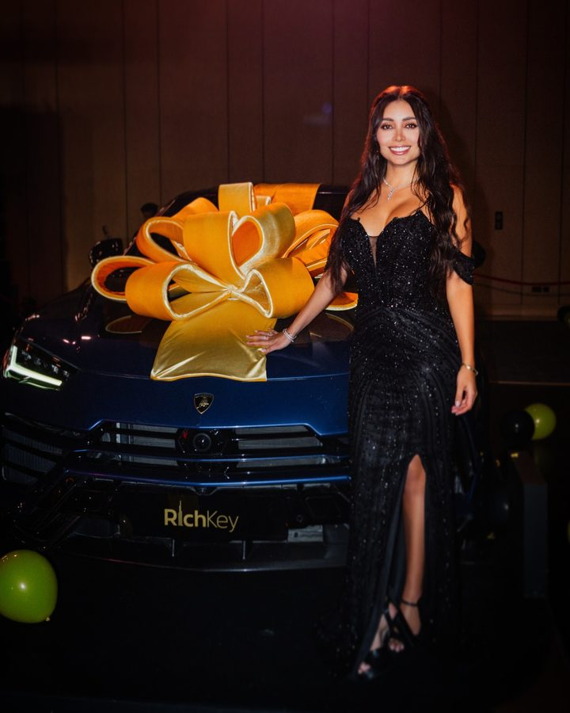

El prompt con el que Claude hizo este video por 1,96 dólares
Este video no lo grabé: lo hizo Claude Code con mi clon, sin cámara y sin saber de cine. Todo el video costó 1,96 dólares. Y videos como este les generan 30 mil dólares en ventas a mis clientes. Es una cuenta buena, porque son anuncios muy impactantes. Aquí tienes el prompt y la estrategia.
Copia el prompt y pégalo en Claude Code. Claude crea tus fichas, hace el video con tu clon, lo revisa y lo arma. Está en español: cambia los planes, la ropa o el edificio como quieras.
¿Cuál es tu plan?
Una sola toma de noche por la fachada de un edificio, y en cada ventana estoy yo viviendo una vida distinta: una cena con la abuela, dormido con mi perro, tatuándome, jefe de un póker clandestino, la fiesta del gol… y yo a los 80 en el último piso.
Claude Code
Haz con mi clon un video de 19 segundos con Higgsfield: las imágenes con GPT Image 2.6 y el video con Seedance 2.5 (16:9, 720p, con audio). Usa las fotos de mi clon de la carpeta fotos. Es una sola toma de noche en Nueva York, sin cortes: la cámara arranca adentro de un apartamento, sale por la ventana y salta rápido de ventana en ventana por la fachada de un edificio clásico de piedra gris, con escalera de incendios negra y tanques de agua en el techo. En cada ventana estoy yo viviendo una vida distinta: plan A, una cena romántica con una abuelita, brindamos con vino tinto; plan B, dormido en el sofá con mi golden retriever, con la luz azul del televisor; plan C, me están tatuando el antebrazo; plan D, soy el jefe de un póker clandestino y afuera alguien sube por la escalera de incendios; plan E, celebro un gol con mis amigos frente al televisor; plan F, yo a los 80 años, recostado en la ventana del último piso, mirando la ciudad. Al final la cámara se aleja y se ve el edificio entero con la calle, los árboles y los carros. Primero crea la ficha de cada plan con mi ropa, la de la abuelita y la del edificio, y espera mi OK. Nadie atraviesa paredes ni vidrios y nadie se mueve más rápido que una persona real. Antes de mostrármelo, revísalo cuadro por cuadro cada medio segundo y, si algo sale mal, rehazlo. Después arma el video vertical: fondo negro, la toma en una franja ancha en el centro, el letrero PLAN A, PLAN B… sobre cada ventana y al final el título ¿CUÁL ES TU PLAN? Ponle música de humor libre de derechos y dime cuánto costó.
Desliza dentro del cuadro para leerlo todo; el botón copia el prompt completo.
🧰 Necesitas: Claude Code (plan Pro), una cuenta de Higgsfield con créditos y unas fotos tuyas para armar tu clon.
💸 Lo que cuesta: este video de 19 segundos me costó 1,96 dólares en créditos de Higgsfield y salió bien a la primera. En 720p, cada segundo de video gasta unos 7 créditos.
⚠️ Clónate solo a ti, nunca a otra persona sin su permiso. Y marca tu video como hecho con IA cuando lo subas.
1
Ten tu cuenta de Claude con plan Pro
Claude Code viene con el plan Pro (unos 20 dólares al mes). El plan gratis no lo incluye. Si ya pagas Pro o Max, salta al paso 2.
Escribe terminal en el buscador de tu computador y ábrela. Pega el comando de tu sistema y dale Enter. No muestra avance mientras descarga: espera a que termine.
Crea una carpeta en Documentos llamada videos-con-mi-clon. Luego, en la terminal:
WINDOWS
Windows PowerShell
cd ~\Documents\videos-con-mi-clon
claude
MAC
Terminal
cd ~/Documents/videos-con-mi-clon
claude
La primera vez te abre el navegador para entrar con tu cuenta de Claude. Entras, vuelves a la terminal y ya está Claude Code esperando tu mensaje. Si te pide permiso para crear archivos o instalar algo, acéptalo: así trabaja.
4
Conecta Higgsfield a Claude Code
Crea tu cuenta en higgsfield.ai y elige un plan con créditos. Después pega esto en Claude Code:
Claude Code
Instala el CLI de Higgsfield con "npm install -g @higgsfield/cli" y ayúdame a iniciar sesión con "higgsfield auth login". Si falta Node.js, instálalo primero.
Se abre el navegador para que entres a tu cuenta de Higgsfield. Apruebas y listo: Claude ya puede crear imágenes y videos por ti.
5
Arma tu clon y pega el prompt
Junta 8 fotos tuyas con buena luz (6 de la cara y 2 de cuerpo entero) en una carpeta llamada fotos dentro de videos-con-mi-clon. Si es tu primera vez, en mi guía para clonarte está el paso a paso.
Luego copia el prompt de arriba y pégalo en Claude Code. Te muestra tus fichas, espera tu OK y arma el video.
La estrategia: un video de 1,96 dólares que vende 30 mil
El video es una sola pieza. Un anuncio así de impactante frena el dedo, y por eso videos como este les generan 30 mil dólares en ventas a mis clientes. Así usamos estos agentes de IA para multiplicar las ventas de un negocio en automático:
Usamos Claude Code, el mismo que hizo este video.
Le pegamos los agentes Imperio: cada uno con su puesto, como un empleado.
Ellos hacen todo el trabajo: crean los anuncios, editan los videos, pautan y optimizan los anuncios en Meta Ads como tu trafficker, crean la página web y los videos de venta, responden los mensajes y le hacen seguimiento a cada cliente.
El negocio vende más y reemplaza el trabajo de 4 personas por una suscripción de 20 dólares al mes.
Así es como los negocios de mis clientes están vendiendo más. Abajo te cuento cómo funcionan los agentes Imperio.
Preguntas frecuentes
¿Sale perfecto a la primera?
No siempre. La IA todavía se equivoca: alguien que atraviesa una pared, una cara que cambia. Por eso el prompt le pide a Claude revisar cada medio segundo y rehacer lo que salga mal. Este salió bien a la primera y costó 1,96 dólares.
¿Puedo poner mis propios planes?
Sí. El prompt está en español: cambia cada plan por la vida que quieras mostrar y Claude escribe el resto.
¿Necesito saber de cine o de edición?
No. Claude Code escribe la toma, crea las imágenes y el video, lo revisa y lo arma. Tú solo revisas y apruebas.
Las empresas que sobrevivan serán las que usen IA
Los agentes Imperio hacen en 3 días el trabajo de todo un mes. Reemplazan una nómina de 4 empleados (2.000 a 4.000 USD al mes) por una IA de 25 a 50 USD.
Primero, los negocios que los usen van a multiplicar sus márgenes. Después, van a ser los únicos que queden: nadie podrá competir en precio con quien lo hace todo sin humanos lentos y caros.
Ya está pasando:
Francia Salazar, estética: factura unos 30.000 USD al mes, 11.000 más que antes, con los agentes trabajando solos.
Dr. Pablo Gavilanes, ginecólogo: +5.000 USD extras al mes en consultas, casi 30.000 USD extra en 6 meses. Los agentes hacen el 95 % del trabajo.
Andrés, glamping: sus reservas llevaban 3 años cayendo por la competencia; las duplicó en 60 días.

Natalia se convirtió en la vendedora #1 de bienes raíces en Dubái gracias a los agentes Imperio y a mi acompañamiento. La premiaron con un Lamborghini Urus avaluado en 300.000 USD.
Te hacen el contenido y los anuncios, editan tus videos, publican por ti, hacen tus páginas web y tus campañas en Meta, y hasta responden tus mensajes y hacen seguimiento de forma automática. Sin saber de tecnología.